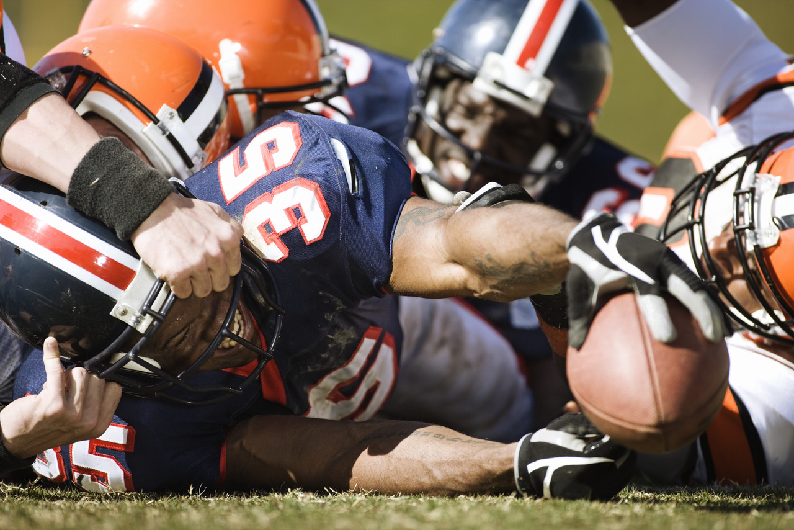

Butting Heads
The Lasting Effects of Consistent Head Traumas
Eric Lin
Spring 2011

On February 17, 2011, 50 year-old Dave Duerson, a former NFL safety and
two-time Super Bowl champion, was found dead in his Florida home from a
self-inflicted gunshot wound through his heart. His dying wish, which
he sent to his family via text message, was that his brain be donated
to the Boston University School of Medicine for research into the
effects of traumatic head injuries resulting from playing professional
football. A personal document found in Duerson’s office revealed how he
complained about memory loss and was having difficulty spelling words.
Duerson hoped that his story would lead to greater awareness of the
risk at which football players put themselves during each play.
Duerson definitely succeeded in drawing
attention to the safety of his fellow athletes, as there have been
calls for greater understanding of how head injuries affect athletes. A
growing research trend focuses not only on traumatic and violent head
injuries, but also takes a look into the cumulative effect of minor
impacts on the head.
Neurological illnesses due to sports are
not something new. For decades we have seen brain related diseases in
boxers. Brain degeneration from punches to the head has been given the
name Dementia Pugilistica (DP), also known as “punch-drunk syndrome.”
The symptoms of DP include memory loss, tremors, difficulties with
speech, and an unsteady gait. It is believed that consistent blows to
the head damage the cerebellum, the region of the brain that deals with
motor control. This causes the neurons in the cerebellum that
receive and transmit electrical signals to atrophy.
Modern day research has sought to delve
further into exactly what happens to the brain during collisions. In a
study led by Dr. Kevin Guskiewicz at the University of North Carolina,
he and his colleagues equipped the university football team with video
cameras and helmet accelerometers to get in-depth views of hits to the
head. The accelerometers were installed on the inside of the players’
helmets, and upon impact would record the force and duration of the
collision. After practice, the research team would then retrieve the
accelerometers and analyze the data.
While Dr. Guskiewicz and his team have not
yet been able to answer the question of whether or not a person is
better off with many minor head traumas or one major head injury, the
recent spotlight his team and other researchers have placed on
football-related head traumas has resulted in significant changes. For
example, the NFL recently implemented rule changes to help protect the
athletes. The most significant of these rule changes was moving the
kick off spot from the 30 yard line to the 35 yard line. The idea here
is that the extra five yards will result in more touchbacks, which are
when the receiver kneels down in the end zone rather than running with
the ball. The reason for this is the most severe head injuries in
football occur during kickoffs, when all the players are running full
speed head first into each other. More touchbacks lead to fewer kickoff
returns, and therefore fewer head injuries.
Congress has also passed laws protecting
the safety of young athletes. In high school football, when a player is
diagnosed with a concussion, he or she is required to leave the game
and cannot return. This is in stark contrast to thirty years ago, when
players would simply rub smelling salts under their nose and get back
into the game.
Research is also being done to find new
materials to make improved helmets that are able to absorb more energy
from violent collisions. From a medical perspective, advanced brain
imaging techniques, blood and spinal fluid tests, and genetic markers
are being experimented with to help doctors identify brain injuries in
their early stages before patients develop many of the crippling and
currently incurable symptoms associated with head injuries.
From car accidents to football collisions,
head injuries are very common in American society, particularly among
college students and athletes. These injuries are often the hardest for
both the patient and the doctor to manage because of the severity and
debilitative nature of the injuries. The fact that symptoms may not
show up for decades after the initial injuries further complicates the
problem. By identifying exactly how the forcefulness and number of head
collisions influences the brain, we can protect future generations of
athletes from experiencing the difficulties associated with head
injuries.